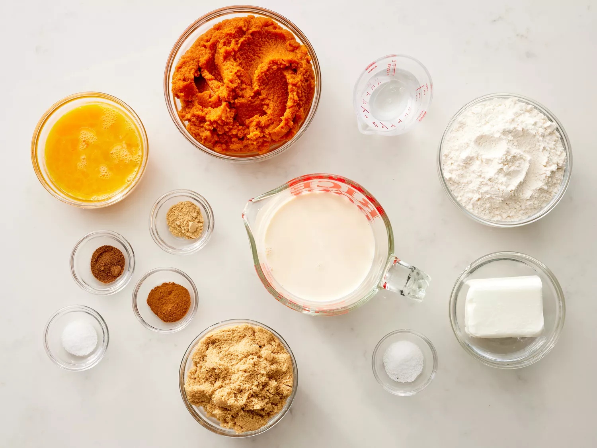
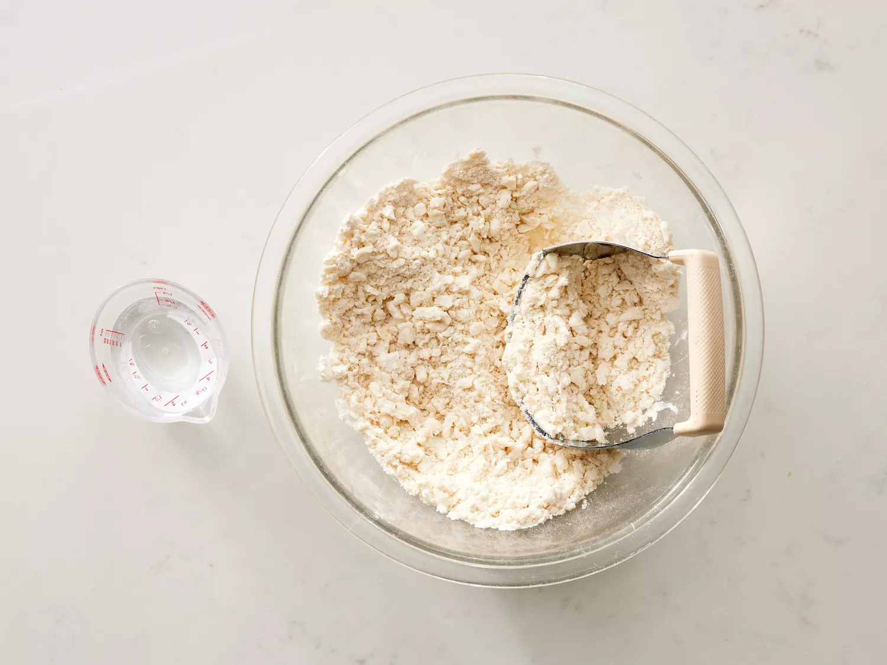
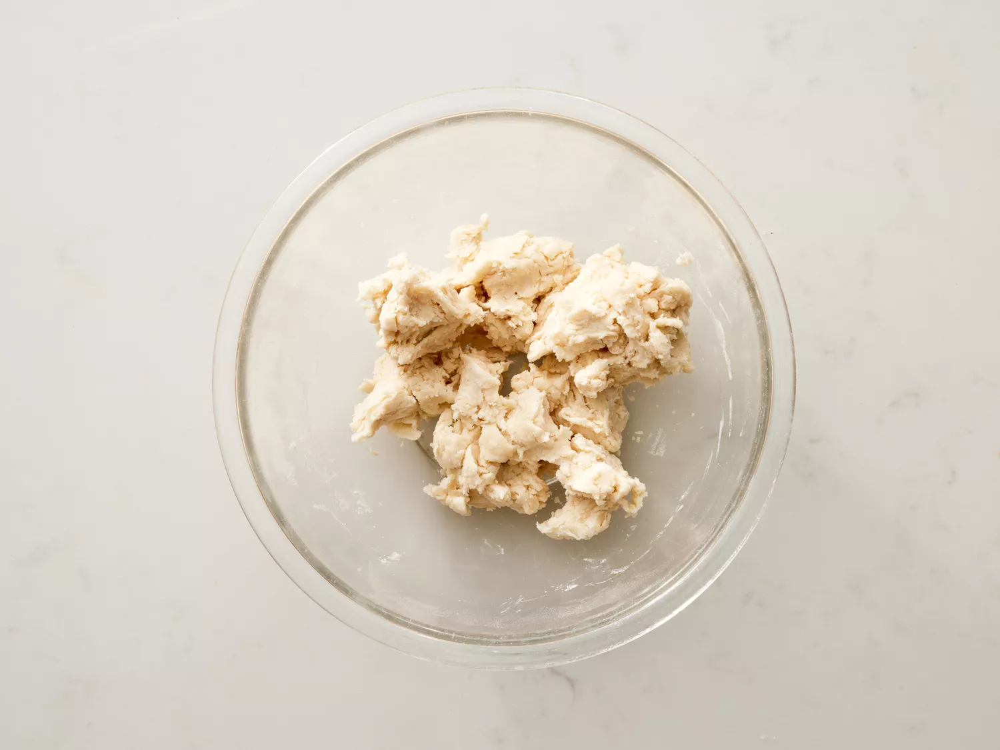
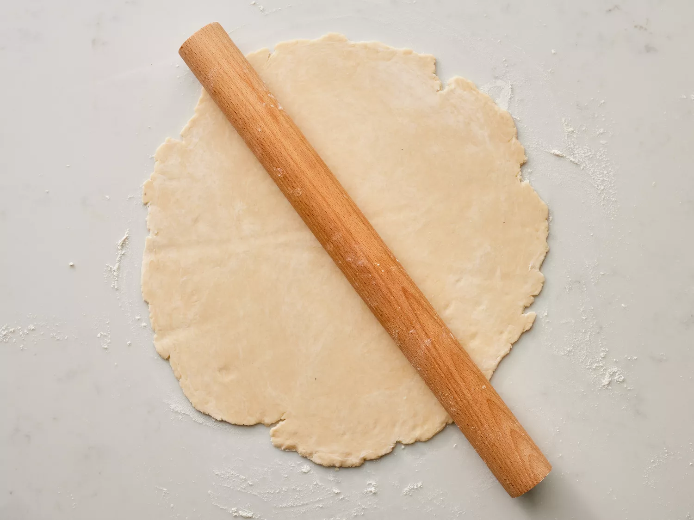
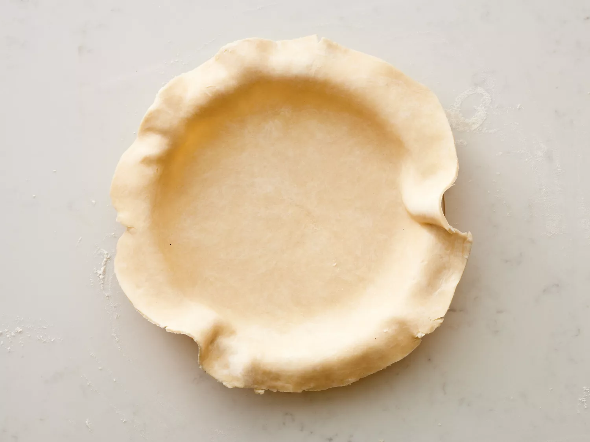

Trở về trang chủ
Công thức bánh bí ngô
Công thức của web Allrecipes
Nguyên liệu vỏ bánh
- ⅓ cốc bột mì đa dụng
- ½ thìa cà phê muối
- ½ cốc bơ lạnh hoặc shortening
- 3 thìa canh nước lạnh, hoặc nhiều hơn nếu cần
Nguyên liệu nhân bánh
- 2 cốc bí ngô nghiền, nấu chín
- 1 lon (12 ounce chất lỏng) sữa đặc
- 2 quả trứng lớn , đánh tan
- ¾ cốc đường nâu đóng gói
- ½ thìa cà phê bột quế, hoặc nhiều hơn tùy khẩu vị
- ½ thìa cà phê gừng xay, hoặc nhiều hơn tùy khẩu vị
- ½ thìa cà phê hạt nhục đậu khấu xay, hoặc nhiều hơn tùy khẩu vị
- ½ thìa cà phê muối
Hướng dẫn
-
Chuẩn bị tất cả nguyên liệu và làm nóng lò ở nhiệt độ 400 độ F (200 độ
C)

-
Để làm vỏ bánh ngọt: Trộn đều bột mì và muối trong một bát. Dùng máy
đánh trứng đánh bơ cho đến khi hỗn hợp mịn như vụn bánh mì.

-
Trộn 3 thìa canh nước, mỗi lần một thìa, cho đến khi bột đủ ẩm để kết
dính. Thêm tối đa 1 thìa canh nước nếu cần.

-
Dùng tay đã rắc một lớp bột mỏng, nặn bột thành khối tròn. Cán bột
trên bề mặt đã rắc một lớp bột mỏng đến độ dày khoảng 1/8 inch.

-
Đặt khuôn bánh nướng úp ngược lên trên bột; dùng dao sắc cắt một vòng
bột lớn hơn khuôn bánh khoảng 3,5 cm. Lấy phần bột thừa ra và bỏ đi,
sau đó để khuôn bánh sang một bên.

-
Nhẹ nhàng lăn một khối bột tròn quanh cán bột; úp mặt phải lên khuôn
bánh. Mở bột ra, nhẹ nhàng ấn khối bột xuống đáy khuôn.

-
Dùng hai tay để vo tròn bột xung quanh mép trên.
-
Cách làm nhân bánh: Đánh đều bí đỏ, sữa đặc, đường nâu, trứng, quế,
gừng, nhục đậu khấu và muối trong một bát lớn bằng máy đánh trứng cho
đến khi hòa quyện. Đổ vào vỏ bánh đã chuẩn bị.
-
Nướng trong lò đã được làm nóng trước cho đến khi cắm dao vào nhân
bánh, cách mép bánh khoảng 2,5 cm, rút ra sạch, mất khoảng 40 đến 60
phút. Nếu cần, có thể dùng giấy bạc phủ kín mép bánh để tránh bị cháy
khi nhân bánh chín.
-
Lấy ra khỏi lò và để nguội ở nhiệt độ phòng trước khi dùng.